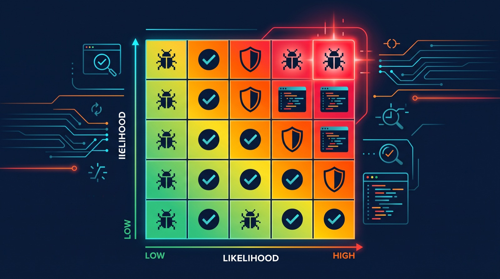

Risk-Based Testing: How to Decide What to Test First When You Can't Test Everything
A practical walkthrough of risk-based testing: how to score features by likelihood and impact, and use that to decide what gets tested before a deadline.
Every QA team eventually hits the same wall: a release date that isn't moving, a test backlog that is, and not enough hours to run every test case against every change. The usual response is to test everything a little, which in practice means testing the riskiest things not quite enough and the safest things more than they need. Risk-based testing is a way out of that trap: instead of spreading effort evenly, you deliberately spend most of it on the things most likely to break and most costly if they do.

The core idea: likelihood times impact
Risk-based testing scores each feature, module, or change on two dimensions:
- Likelihood — how probable is it that this part of the system has a defect? Complex logic, new code, recent changes, and areas with a history of bugs score higher here.
- Impact — if it breaks, how bad is it? Revenue loss, data corruption, legal or compliance exposure, and the number of users affected all push impact up.
Multiply (or combine) the two, and you get a risk score you can rank features by. Teams rarely need precise math for this — a simple high/medium/low scale on each axis, turned into a 3x3 or 5x5 grid, is usually enough to separate "test this thoroughly first" from "smoke-test this and move on." More formal versions of the same idea show up in methods like FMEA (Failure Mode and Effect Analysis) and fault tree analysis, which are common in regulated industries where you need to document why a risk was rated the way it was, but most product teams don't need that overhead.
A worked example
Imagine a mid-size online retailer shipping a release with three changes, and a QA team with two days instead of the week they'd normally want:
| Feature | Likelihood of defect | Impact if broken | Risk |
|---|---|---|---|
| Checkout and payment flow | Medium (touched by two different teams this sprint) | High (direct revenue loss, failed orders) | High |
| Promo code discount calculation | High (new discount-stacking logic, edge cases with expired codes) | Medium (wrong totals, refund requests, but orders still complete) | High |
| Wishlist "save for later" button | Low (simple UI change, no backend logic) | Low (cosmetic feature, no transaction impact) | Low |
With two days instead of a week, the team doesn't try to cover all three equally. Checkout gets full regression coverage plus edge cases (expired cards, partial stock, timeout during payment capture). The promo code logic gets targeted testing on the new stacking behavior and the specific edge cases that changed, rather than re-testing the entire discount system. The wishlist button gets a quick smoke test and gets explicitly flagged to stakeholders as lower-confidence coverage for this release — which is the part teams skip, and shouldn't. Risk-based testing only works as a trade-off if the trade-off is visible, not silent.
Making this part of the regular workflow
The matrix above is useful as a one-off exercise, but it earns its keep when it's routine. In practice that looks like:
During sprint planning or refinement:
1. List the features/changes going into this release
2. For each, rate likelihood (code complexity, change size, bug history)
3. For each, rate impact (revenue, users affected, compliance, reversibility)
4. Rank and allocate test time accordingly
5. Write down what got less coverage, and whyThat last step — writing down what was deliberately under-tested — is what turns risk-based testing into a decision stakeholders can see and challenge, instead of a QA team quietly cutting corners under deadline pressure.
Where risk-based testing breaks down
This approach isn't free, and it's worth being honest about where it fails:
It's only as good as the risk assessment. If the team underestimates how likely a change is to break something — a common failure mode with code nobody fully understands anymore — the "low risk" bucket can hide a serious bug. Risk scores based on gut feeling rather than data (recent incident history, code churn, defect density) tend to reflect whoever is loudest in the room, not actual risk.
Low-risk areas don't stay low-risk forever. A feature rated low risk because it was simple when it shipped can become high risk once other code starts depending on it. Risk scoring needs to be reassessed, not set once and reused for every release.
It's a poor fit for exploratory testing. Risk-based testing is directive — it tells you where to look. Exploratory testing works by not knowing in advance where the bug is. Leaning too hard on risk scores can make a team stop looking in the places they didn't predict, which is exactly where a certain class of bugs live.
It needs someone who understands the system to do the scoring. On a team without a QA lead or senior engineer who has context on where the fragile parts of the codebase are, risk ratings can end up reflecting recent headlines (the last outage) rather than genuine structural risk.
What to do next
- Pick your next release and build a simple likelihood/impact table for the changes going into it, even informally in a spreadsheet or the sprint ticket.
- Pull your last two or three months of production incidents or hotfixes and check whether they map to areas you'd have rated high risk. If they don't, your risk criteria need adjusting.
- Add "coverage decision" as a visible line item in release notes or sign-off docs — what got full testing, what got reduced coverage, and why — so the trade-off is a team decision, not a quiet omission.
- If you're in a regulated space (finance, healthcare, aviation) and need to justify risk ratings formally, look into FMEA as a structured starting point rather than building your own framework from scratch.
Sources
Svaki QA tim prije ili kasnije udari u isti zid: datum objave koji se ne pomjera, gomila testova koja stalno raste i premalo sati da se svaki test slučaj pokrene nad svakom izmjenom. Uobičajena reakcija je da se sve testira pomalo, što u praksi znači da se najrizičnije stvari testiraju nedovoljno, a najbezbjednije više nego što im treba. Testiranje zasnovano na riziku je izlaz iz te zamke: umjesto da trud ravnomjerno rasporedite, namjerno ga najviše trošite na ono što će se najvjerovatnije pokvariti i što je najskuplje ako se pokvari.
Osnovna ideja: vjerovatnoća puta uticaj
Testiranje zasnovano na riziku ocjenjuje svaku funkcionalnost, modul ili izmjenu po dvije dimenzije:
- Vjerovatnoća — koliko je vjerovatno da ovaj dio sistema ima grešku? Složena logika, novi kod, skorašnje izmjene i oblasti sa istorijom grešaka ovdje dobijaju višu ocjenu.
- Uticaj — ako se pokvari, koliko je to loše? Gubitak prihoda, oštećenje podataka, pravna ili regulatorna izloženost i broj pogođenih korisnika — sve to podiže uticaj.
Pomnožite (ili kombinujte) ove dvije vrijednosti i dobijate ocjenu rizika po kojoj možete rangirati funkcionalnosti. Timovima rijetko treba precizna matematika — jednostavna skala visoko/srednje/nisko na svakoj osi, pretvorena u mrežu 3x3 ili 5x5, obično je dovoljna da razdvoji „ovo prvo detaljno testiraj" od „ovo samo smoke testiraj i idi dalje". Formalnije verzije iste ideje postoje u metodama kao što su FMEA (Failure Mode and Effect Analysis, analiza načina i posljedica otkaza) i analiza stabla grešaka, koje su uobičajene u regulisanim industrijama gdje morate dokumentovati zašto je rizik ocijenjen baš tako, ali većini produktnih timova taj dodatni teret nije potreban.
Primjer iz prakse
Zamislite online prodavnicu srednje veličine koja objavljuje verziju sa tri izmjene, i QA tim koji ima dva dana umjesto sedmice koju bi inače želio:
| Funkcionalnost | Vjerovatnoća greške | Uticaj ako se pokvari | Rizik |
|---|---|---|---|
| Checkout i tok plaćanja | Srednja (u ovom sprintu su ga dirala dva različita tima) | Visok (direktan gubitak prihoda, neuspjele narudžbe) | Visok |
| Obračun popusta za promo kodove | Visoka (nova logika za kombinovanje popusta, granični slučajevi sa isteklim kodovima) | Srednji (pogrešni iznosi, zahtjevi za povrat novca, ali narudžbe se i dalje završavaju) | Visok |
| Dugme „sačuvaj za kasnije" na listi želja | Niska (jednostavna UI izmjena, bez backend logike) | Nizak (kozmetička funkcionalnost, bez uticaja na transakcije) | Nizak |
Sa dva dana umjesto sedmice, tim ne pokušava da sve tri stavke pokrije podjednako. Checkout dobija kompletnu regresionu pokrivenost plus granične slučajeve (istekle kartice, djelimična zaliha, timeout tokom naplate). Logika promo kodova dobija ciljano testiranje novog kombinovanja popusta i konkretnih graničnih slučajeva koji su se promijenili, umjesto ponovnog testiranja cijelog sistema popusta. Dugme na listi želja dobija brz smoke test i stejkholderima se eksplicitno označava kao pokrivenost sa manjim stepenom sigurnosti za ovu objavu — a to je dio koji timovi preskaču, a ne bi trebalo. Testiranje zasnovano na riziku funkcioniše kao kompromis samo ako je taj kompromis vidljiv, a ne prećutan.
Kako da ovo postane dio redovnog rada
Matrica iznad je korisna i kao jednokratna vježba, ali se pravo isplati tek kada postane rutina. U praksi to izgleda ovako:
Tokom planiranja sprinta ili refinementa:
1. Navedite funkcionalnosti/izmjene koje ulaze u ovu objavu
2. Za svaku ocijenite vjerovatnoću (složenost koda, veličina izmjene, istorija grešaka)
3. Za svaku ocijenite uticaj (prihod, broj korisnika, usklađenost, povratnost)
4. Rangirajte ih i u skladu s tim rasporedite vrijeme za testiranje
5. Zapišite šta je dobilo manju pokrivenost, i zaštoTaj posljednji korak — zapisivanje onoga što je namjerno manje testirano — pretvara testiranje zasnovano na riziku u odluku koju stejkholderi mogu da vide i ospore, umjesto da QA tim pod pritiskom roka tiho skraćuje postupak.
Gdje testiranje zasnovano na riziku zakazuje
Ovaj pristup nije besplatan, i vrijedi biti iskren o tome gdje ne radi:
Dobro je onoliko koliko je dobra procjena rizika. Ako tim potcijeni koliko je vjerovatno da će izmjena nešto pokvariti — što je česta greška kod koda koji više niko u potpunosti ne razumije — kategorija „nizak rizik" može sakriti ozbiljnu grešku. Ocjene rizika zasnovane na osjećaju umjesto na podacima (skorašnja istorija incidenata, učestalost izmjena koda, gustina grešaka) obično odražavaju onoga ko je najglasniji u prostoriji, a ne stvarni rizik.
Oblasti niskog rizika ne ostaju zauvijek niskog rizika. Funkcionalnost ocijenjena kao niskorizična zato što je bila jednostavna kada je objavljena može postati visokorizična čim drugi kod počne da zavisi od nje. Ocjene rizika treba preispitivati, a ne postaviti jednom i koristiti za svaku objavu.
Loše se uklapa sa istraživačkim testiranjem. Testiranje zasnovano na riziku je usmjeravajuće — govori vam gdje da gledate. Istraživačko testiranje funkcioniše upravo zato što unaprijed ne znate gdje je greška. Previše oslanjanja na ocjene rizika može navesti tim da prestane da gleda tamo gdje nije predvidio, a baš tu živi određena vrsta grešaka.
Potreban je neko ko razumije sistem da radi ocjenjivanje. U timu bez QA lead-a ili seniora koji zna gdje su krhki dijelovi koda, ocjene rizika mogu da odražavaju skorašnje naslove (posljednji pad sistema) umjesto stvarnog strukturnog rizika.
Šta dalje
- Izaberite sljedeću objavu i napravite jednostavnu tabelu vjerovatnoće i uticaja za izmjene koje ulaze u nju, makar neformalno u spreadsheet-u ili u tiketu sprinta.
- Izvucite produkcijske incidente ili hotfix-eve iz posljednja dva-tri mjeseca i provjerite da li se poklapaju sa oblastima koje biste ocijenili kao visokorizične. Ako se ne poklapaju, vaše kriterijume za rizik treba prilagoditi.
- Dodajte „odluku o pokrivenosti" kao vidljivu stavku u release notes ili dokumente za odobrenje objave — šta je dobilo kompletno testiranje, šta smanjenu pokrivenost, i zašto — kako bi kompromis bio odluka tima, a ne tihi propust.
- Ako radite u regulisanoj oblasti (finansije, zdravstvo, avijacija) i morate formalno da opravdate ocjene rizika, pogledajte FMEA kao strukturiranu polaznu tačku umjesto da gradite sopstveni okvir od nule.